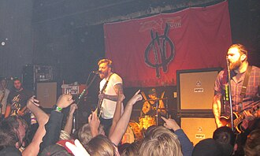

Four Year Strong
Four Year Strong is an American pop-punk band from Worcester, Massachusetts, formed in 2001. The group consists of vocalists and guitarists Dan O'Connor and Alan Day, bassist Joe Weiss, and drummer Jake Massucco. They have released eight studio albums; their most recent album, Analysis Paralysis, was released on August 9, 2024, through Pure Noise Records.
Complete Discography & Tracklists (23)
2006 Explains It All 🎵 11 Tracks
2007 Rise or Die Trying 🎵 11 Tracks
2009 Enemy Of The World 🎵 11 Tracks
2011 In Some Way, Shape, Or Form. 🎵 12 Tracks
2014 Go Down in History 🎵 0 Tracks
No tracks registered.
2015 Four Year Strong 🎵 11 Tracks
2017 Some of You Will Like This, Some of You Won't 🎵 12 Tracks
2017 Rise or Die Trying (10 Year Anniversary Edition) 🎵 15 Tracks
2020 Brain Pain 🎵 12 Tracks
2021 Brain Pain (Deluxe) 🎵 21 Tracks
2021 Learn to Love the Lie / Heroes Get Remembered, Legends Never Die (Lofi) 🎵 2 Tracks
2022 Enemy of the World (Re-Recorded) 🎵 14 Tracks
2023 Holiday Special Live 🎵 13 Tracks
2024 analysis paralysis 🎵 12 Tracks
2024 Don't Change / Vasoline / My Own Worst Enemy 🎵 0 Tracks
No tracks registered.
2024 bad habit 🎵 5 Tracks
2024 aftermath/afterthought 🎵 4 Tracks
2024 uncooked 🎵 3 Tracks
2025 WHIPLASH 🎵 0 Tracks
No tracks registered.